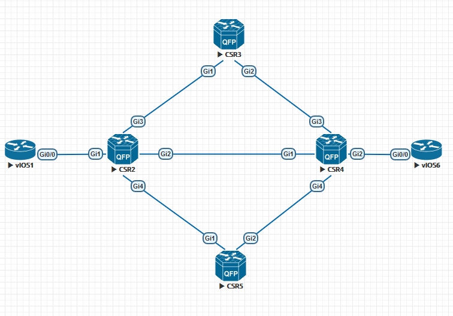

OSPFv2 Loop-Free Alternate Fast Reroute
03 Oct 2017Содержание
OSPF LFA FRR - технология, позволяющая протоколу OSPF заранее установить в RIB резервный путь для определенных префиксов и использовать его в случае отказа основного канала без расчета нового next-hop.
Ограничения для OSPFv2:
- Не поддерживается на маршрутизаторах с virtual-link;
- Не поддерживаются VRF (настройка возможна только в global OSPF instance).
Термины
LFA Repair Path - заранее предустановленный путь для трафика, становящийся активным при отказе основного пути;
Топология, используемая в лабораторной работе:

Предварительная настройка
Предварительно на всех CSR настроен OSPF, и интерфейс Lo0 с адресом 10.0.0.n/32. Все интерфейсы помещены в area0. Маршрутизаторы vIOS выступают в качестве клиентов.
OSPF RIB на CSR2 до включения FRR:
CSR2#sh ip ospf rib
OSPF Router with ID (10.0.25.2) (Process ID 1)
Base Topology (MTID 0)
OSPF local RIB
Codes: * - Best, > - Installed in global RIB
* 10.0.0.2/32, Intra, cost 1, area 0, Connected
via 10.0.0.2, Loopback0
*> 10.0.0.3/32, Intra, cost 2, area 0
via 10.0.23.3, GigabitEthernet3
*> 10.0.0.4/32, Intra, cost 2, area 0
via 10.0.24.4, GigabitEthernet2
*> 10.0.0.5/32, Intra, cost 2, area 0
via 10.0.25.5, GigabitEthernet4
* 10.0.12.0/24, Intra, cost 1, area 0, Connected
via 10.0.12.2, GigabitEthernet1
* 10.0.23.0/24, Intra, cost 1, area 0, Connected
via 10.0.23.2, GigabitEthernet3
* 10.0.24.0/24, Intra, cost 1, area 0, Connected
via 10.0.24.2, GigabitEthernet2
* 10.0.25.0/24, Intra, cost 1, area 0, Connected
via 10.0.25.2, GigabitEthernet4
*> 10.0.34.0/24, Intra, cost 2, area 0
via 10.0.23.3, GigabitEthernet3
via 10.0.24.4, GigabitEthernet2
*> 10.0.45.0/24, Intra, cost 2, area 0
via 10.0.25.5, GigabitEthernet4
via 10.0.24.4, GigabitEthernet2
*> 10.0.46.0/24, Intra, cost 2, area 0
via 10.0.24.4, GigabitEthernet2
OSPF RIB на CSR2 после включения FRR на всех CSR командой fast-reroute per-prefix enable area 0 prefix-priority low:
CSR2#sh ip ospf rib
OSPF Router with ID (10.0.25.2) (Process ID 1)
Base Topology (MTID 0)
OSPF local RIB
Codes: * - Best, > - Installed in global RIB
* 10.0.0.2/32, Intra, cost 1, area 0, Connected
via 10.0.0.2, Loopback0
*> 10.0.0.3/32, Intra, cost 2, area 0
via 10.0.23.3, GigabitEthernet3
repair path via 10.0.24.4, GigabitEthernet2, cost 3
*> 10.0.0.4/32, Intra, cost 2, area 0
via 10.0.24.4, GigabitEthernet2
repair path via 10.0.25.5, GigabitEthernet4, cost 3
*> 10.0.0.5/32, Intra, cost 2, area 0
via 10.0.25.5, GigabitEthernet4
repair path via 10.0.24.4, GigabitEthernet2, cost 3
* 10.0.12.0/24, Intra, cost 1, area 0, Connected
via 10.0.12.2, GigabitEthernet1
* 10.0.23.0/24, Intra, cost 1, area 0, Connected
via 10.0.23.2, GigabitEthernet3
* 10.0.24.0/24, Intra, cost 1, area 0, Connected
via 10.0.24.2, GigabitEthernet2
* 10.0.25.0/24, Intra, cost 1, area 0, Connected
via 10.0.25.2, GigabitEthernet4
*> 10.0.34.0/24, Intra, cost 2, area 0
via 10.0.23.3, GigabitEthernet3
repair path via 10.0.24.4, GigabitEthernet2, cost 2
via 10.0.24.4, GigabitEthernet2
repair path via 10.0.23.3, GigabitEthernet3, cost 2
*> 10.0.45.0/24, Intra, cost 2, area 0
via 10.0.25.5, GigabitEthernet4
repair path via 10.0.24.4, GigabitEthernet2, cost 2
via 10.0.24.4, GigabitEthernet2
repair path via 10.0.25.5, GigabitEthernet4, cost 2
*> 10.0.46.0/24, Intra, cost 2, area 0
via 10.0.24.4, GigabitEthernet2
repair path via 10.0.25.5, GigabitEthernet4, cost 3
Видно, что после включения FRR в OSPF RIB появляется repair path для тех префиксов, которые могут быть доступны более чем через один next-hop. Также repair path появляется в CEF (пример для 10.0.46.0/24):
CSR2#sh ip cef 10.0.46.0
10.0.46.0/24
nexthop 10.0.24.4 GigabitEthernet2
repair: attached-nexthop 10.0.25.5 GigabitEthernet4
Имеется возможность селективного задания префиксов, для которых будет выбираться repair path:
ip prefix-list PL_FRR_HIGH_PRIORITY seq 5 permit 10.0.46.0/24
route-map RM_FRR_HIGH_PRIORITY permit 10
match ip address prefix-list PL_FRR_HIGH_PRIORITY
router ospf 1
prefix-priority high route-map RM_FRR_HIGH_PRIORITY
fast-reroute per-prefix enable area 0 prefix-priority high
При подобной настройке repair path будет создан только для префикса 10.0.46.0/24. Следует учитывать, что без явного указания /32 префиксы имеют high приоритет, а все остальные – low.
Атрибуты LFA FRR
Возможна настройка следующих атрибутов (с указанием приоритета):
10 srlg
20 primary-path
30 interface-disjoint
40 lowest-metric
50 linecard-disjoint
60 node-protecting
70 broadcast-interface-disjoint
256 load-sharing
Данные атрибуты непосредственно влияют на выбор repair path (при наличии нескольких вариантов). Индекс (приоритет атрибута) можно изменить командой:
fast-reroute per-prefix tie-break index
Shared Risk Link Group (SRLG)
Группа интерфейсов, обладающих одинаковым риском отказа (например – при отказе физического интерфейса все sub-интерфейсы также будут неактивны). Канал, находящийся в одной SRLG с основным, по умолчанию не будет выбран в качестве repair path при наличии других вариантов.
####Пример настройки:
По умолчанию в качестве repair path для префикса 10.0.46.0/24 на CSR2 выступает next-hop 10.0.25.5, доступный через интерфейс Gi4:
CSR2#sh ip ospf rib 10.0.46.0 | i repair
repair path via 10.0.25.5, GigabitEthernet4, cost 3
Объединим интерфейс Gi4 в одну SRLG вместе с основным (Gi2):
CSR2(config)#int gi 2
CSR2(config-if)#srlg gid 1
CSR2(config-if)#int gi 4
CSR2(config-if)#srlg gid 1
После этого repair path поменялся на next-hop, доступный через Gi3, так как Gi2 и Gi4 теперь с точки зрения маршрутизатора находятся в одном домене отказа:
CSR2#sh ip ospf rib 10.0.46.0 | i repair
repair path via 10.0.23.3, GigabitEthernet3, cost 3
Primary-path
При использовании данного атрибута в качестве repair path всегда (при отсутствии влияния SRLG) будет выбран next-hop, через который вместе с основным next-hop балансируется (ECMP) трафик. Например, выбор repair path на CSR2 для префикса 10.0.34.0/24 (стыковочная сеть между маршрутизаторами CSR3 и CSR4) будет выглядеть следующим образом
CSR2#sh ip ospf rib 10.0.34.0
OSPF Router with ID (10.0.25.2) (Process ID 1)
Base Topology (MTID 0)
OSPF local RIB
Codes: * - Best, > - Installed in global RIB
LSA: type/LSID/originator
*> 10.0.34.0/24, Intra, cost 2, area 0
SPF Instance 27, age 00:57:01
Flags: RIB
via 10.0.23.3, GigabitEthernet3
Flags: RIB
LSA: 2/10.0.34.4/10.0.0.4
repair path via 10.0.24.4, GigabitEthernet2, cost 2
Flags: RIB, Repair, IntfDj, BcastDj, PrimPath, NodeProt, Downstr
LSA: 2/10.0.34.4/10.0.0.4
via 10.0.24.4, GigabitEthernet2
Flags: RIB
LSA: 2/10.0.34.4/10.0.0.4
repair path via 10.0.23.3, GigabitEthernet3, cost 2
Flags: RIB, Repair, IntfDj, BcastDj, PrimPath, NodeProt, Downstr
LSA: 2/10.0.34.4/10.0.0.4
Из приведенного вывода понятно, что next-hop в ECMP будут являться repair path друг для друга.
Interface-disjoint
Данный атрибут означает, что приоритетным repair path будет выбран next-hop доступный через интерфейс, отличный от интерфейса основного next-hop. При этом sub-interfaces считаются разными интерфейсами, и при выборе между ними данный атрибут не будет играть роли.
Lowest-metric
При использовании атрибута lowest-metric в выборе repair path будет учитываться метрика до префикса назначения через резервные next-hop. Соответственно, выбран будет next-hop с меньшей метрикой.
Linecard-disjoint
Атрибут, аналогичный interface-disjoint, с тем отличием, что интерфейсы, расположенные в одной линейной карте с основным, считаются менее приоритетными в выборе repair path.
Node-protecting
Данный атрибут служит защитой от отказа OSPF соседа, на котором расположены основной и резервный next-hop. Больший приоритет в выборе repair path будет иметь next-hop, расположенный на другом маршрутизаторе.
Broadcast-interface-disjoint
Данный атрибут делает более приоритетным next-hop, расположенный в разных с основным next-hop broadcast доменах. Это позволяет быстрее перестроить топологию при отказе коммутатора в топологиях, когда несколько маршрутизаторов строят OSPF соседство через данный коммутатор.
Downstream
Выключен по умолчанию. При его включении начинается подсчет метрик, аналогичный EIGRP Feasibility Condition (метрика соседа должна быть меньше, чем метрика основного маршрута). Соответственно, выбран будет next-hop, удовлетворяющий данному условию.
Secondary-path
Выключен по умолчанию. Атрибут, противоположный атрибуту primary-path. При его использовании приоритетным будет выбран next-hop, не участвующий в ECMP с основным (логика такова, что два канала в ECMP потенциально могут быть подвержены одним и тем же проблемам, и присутствует вероятность, что они откажут одновременно).
Вывод для префикса 10.0.34.0/24 с маршрутизатора CSR2 до включения атрибута secondary-path:
CSR2#sh ip ospf rib 10.0.34.0 | i repair
repair path via 10.0.24.4, GigabitEthernet2, cost 2
repair path via 10.0.23.3, GigabitEthernet3, cost 2
Вывод для префикса 10.0.34.0/24 с маршрутизатора CSR2 после включения атрибута secondary-path:
CSR2(config-router)#fast-reroute per-prefix tie-break secondary-path index 5
CSR2#sh ip ospf fast-reroute | i secondary
5 secondary-path
CSR2#sh ip ospf rib 10.0.34.0 | i repair
repair path via 10.0.25.5, GigabitEthernet4, cost 3
repair path via 10.0.25.5, GigabitEthernet4, cost 3